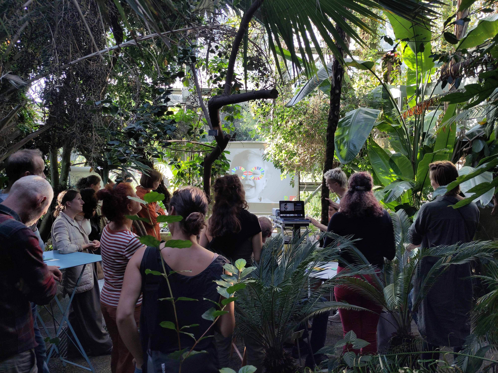
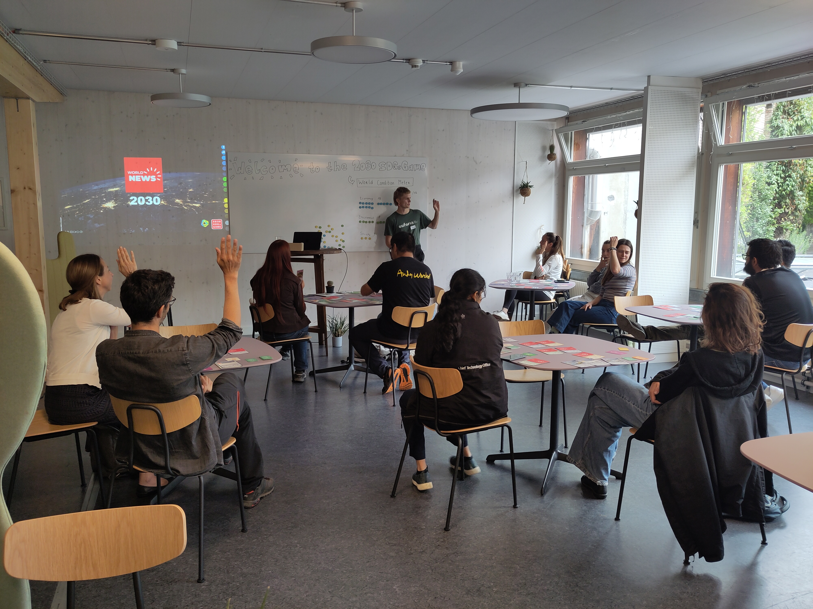
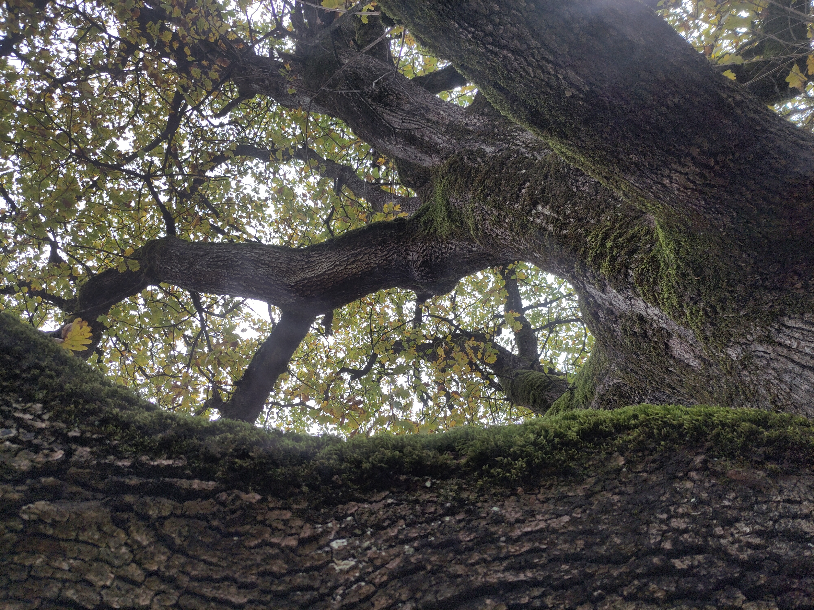

Outreach activities
Alongside my research and teaching, I actively share current scientific knowledge on biodiversity and sustainability beyond academia, employing a variety of approaches and working with diverse partners.


Should we invest in prestigious mountain lakes or cleaner energy to create a more sustainable world? In this interactive serious game X Biodiversity, players shape systemic change with their decisions and at the same time recognize themselves as part of the system. This simulation game helps to better understand socially relevant and sustainable decision-making and design processes. Together with 2030 SDGs game facilitator Siro Koch [BOGA]

The communication networks formed by tree roots and root fungi can cover a forest. Together with electronic musician Gaudenz Badrutt, we took the audience on a trip to this unknown subterranean world. Weaving threads between music and science in a combined lecture, concert, and discussion.[Musikfestival Bern]